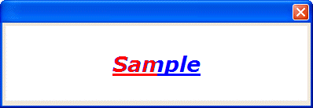
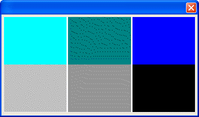

CHANGE_COLOR()
Syntax
CHANGE_COLOR( Xpos as N, Ypos as N, Width as N, Height as N, Search_Colors as C, Replace_Colors as C [, Nomatch_Color as C ] )
Argument | Description |
Xpos | The horizontal coordinate of the upper left corner of the rectangular area to be modified. |
Ypos | The vertical coordinate of the upper left corner of the rectangular area to be modified. |
Width | The width of the rectangular area to be modified. |
Height | The height of the rectangular area to be modified. |
Search_Colors | The colors to search for. |
Replace_Colors | The colors to substitute. |
Nomatch_Color | Optional. |
Description
The CHANGE_COLOR() function changes the colors of pixels in a specified area.
Supported By
Alpha Five Version 5 and Above
Limitations
Used only in the Code sections of UI_BITMAP_DRAW(), UI_SCREEN_DRAW(), and UI_PRINTER_DRAW().
Example
The blue halo around the red letters below is because the font engine smooths (anti-aliases) between the original blue fill color and the white background, resulting in a variety of other blue colors that are not being replaced.

ui_bitmap_create("test", 4, 1) ui_bitmap_draw("test",<<%code% set_font("Verdana,20,biu", "blue", "white") inner_Rect(0, 0, 4, 1) text("Sample", bitmap_width("test")/2, bitmap_height("test")/2, "center") change_color(0,0,2,1,"blue","red") %code%) ui_dlg_box("","{image=test}") |
The next example changes three search colors to three replace colors.

ui_bitmap_draw("test",<<%code% inner_Rect(0, 0, 4, 2) set_pen("white") set_brush("cyan") fill_rect(0, 0, 1.33, 2) set_brush("Dark Cyan") fill_rect(1.34, 0, 1.33, 2) set_brush("Blue") fill_rect(2.68, 0, 1.33, 2) fromcolor = <<%str% Cyan Dark Cyan Blue %str% tocolor = <<%str% Gray-25 Gray-40 Black %str% change_color(0, 1, 4, 1, fromcolor, tocolor) %code%) ui_dlg_box("","{image=test}") |
See Also